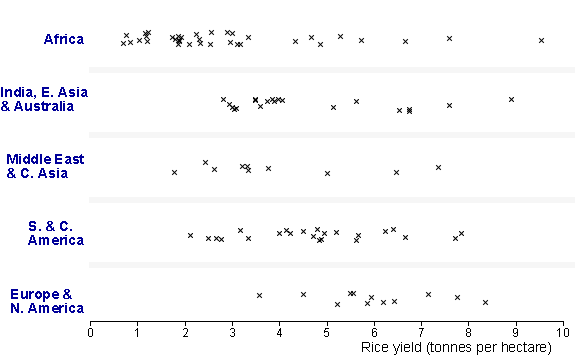

Comparing groups
Dot plots and stem and leaf plots retain a lot of detailed information about the individual values in a data set. Although this detailed information may be useful when examining the distribution of values in a single data set, it is distracting when two or more groups are being compared.
Too much detail can attract attention away from the main differences between the groups.
We usually want to answer the following questions:
Dot plots and stem and leaf plots do contain the answers to these questions, but the information does not 'jump out at you'. Histograms and frequency polygons are better for making comparisons since they hide the detailed information about individual values, but many data sets can be effectively summarised much further.
Rice yields
The jittered dot plots below show the rice yields (tonnes per hectare) in 2012 from the major rice-producing countries of the world.

Use the pop-up menu to compare the regions with stacked dot plots and histograms. The main information from the displays is:
Although the main differences are easily seen, the eye is also distracted by other irregularities in the displays.
The remainder of this section describes a new way to summarise the distribution of values in a data set. This graphical summary concisely captures much of the 'important' features of the distribution and is particularly effective for comparing two or more groups of values.